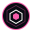
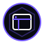

One core.
Many capabilities.
Candidate L1 identity family derived from the approved Axiom Core. Symbols are under visual review.
Masterbrand and intelligence systems
Studio family

Brand Studio
UI/UX StudioColour is a secondary cue. L2 will add small-size, monochrome, reversed and horizontal wordmark variants after this architecture is accepted.